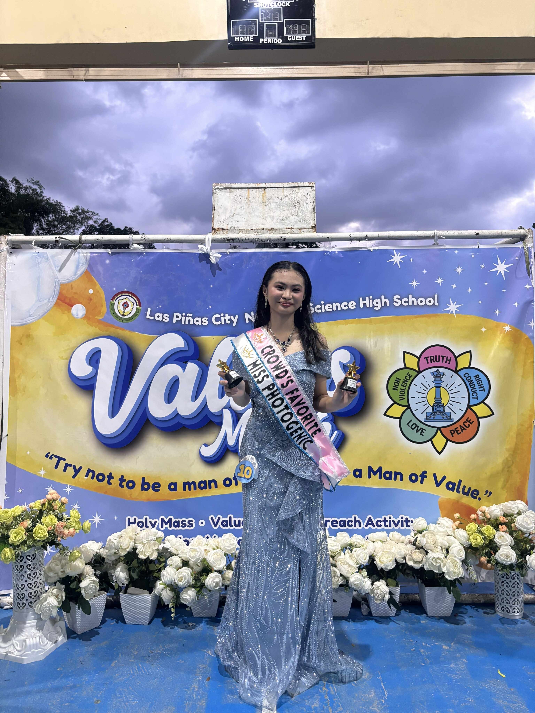
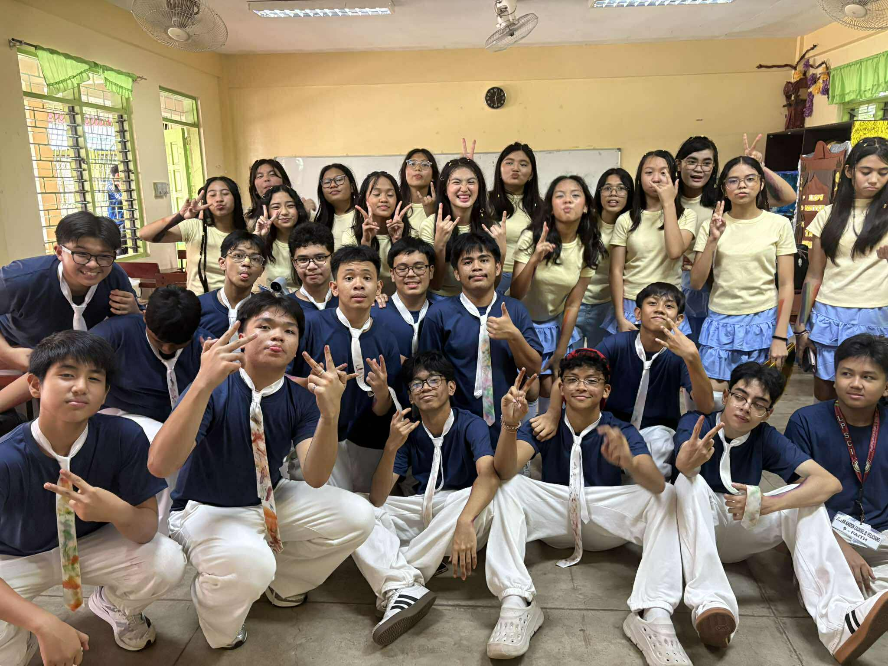
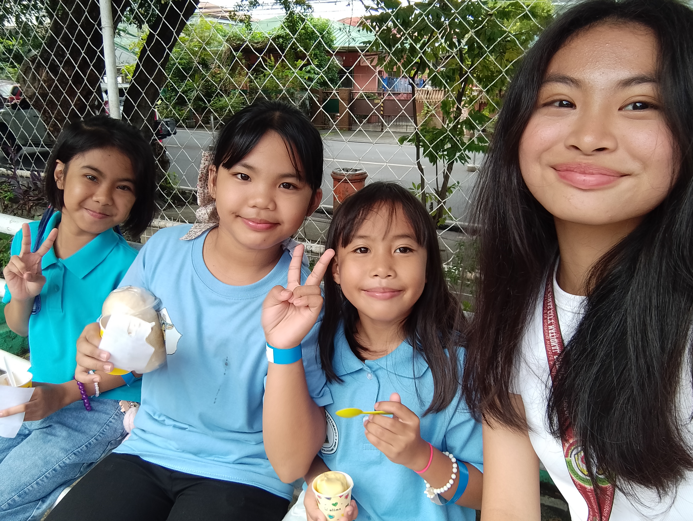
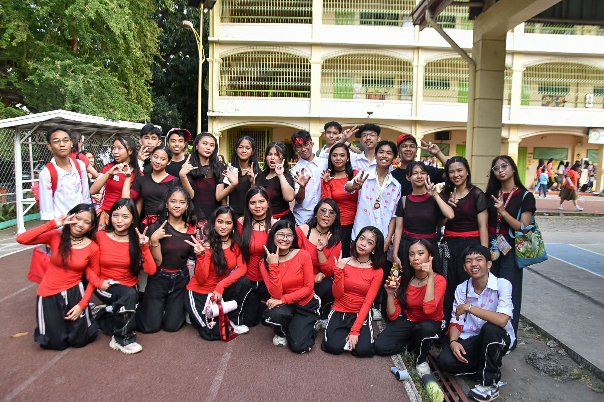
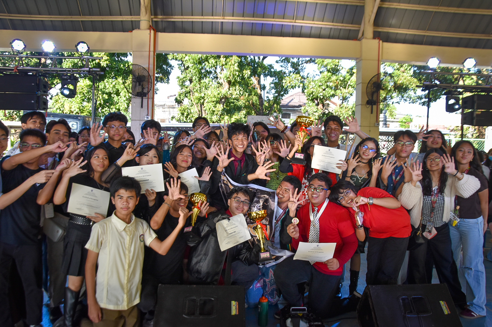
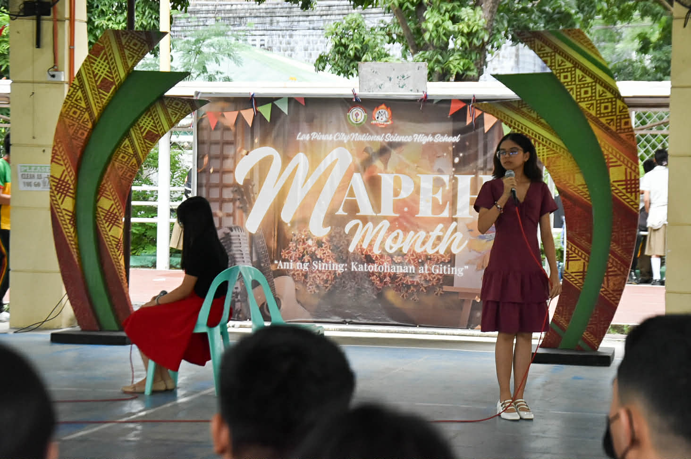

3rd Quarter Events ! 🌸
Reflections 💖
Reflection Questions:
1.What is the most important thing I learned from the event?
2. How can I apply what I learned in real-life situations?
3. Did I actively participate in the event? How?
4. If I were to teach this topic/subject to a classmate, how would I explain it?
5. Why is it important to have an event (per subject)? Explain your answer.


Most Valuable Person
1. The most important thing I learned from joining this year's Most Valuable Person or MVP is going out of your usual setting or something we get used to isn't bad after all. Well, in fact it was a great experience to be able to represent my section in a event that speaks a lot about the values we should always put into practice.
2. I can apply what I learned in joining future pageantry and encouraging others to join in this kind of event. The confidence I built while preparing for the competition shaped a big part of my love for yourself right now.
3. Yes, I proudly represented my section and the virtue of “Maawain”. Joining this competition was one of my best decision I made for the last month of 2025. It really was a great experience and I am still for grateful for the opportunity.
4. Pageantry, if I were to explain this to a classmate I will explain it by experience. Pageantry for some can be too intimidating or scary but it really wasn't. If you love what you're doing, you just feel like having fun and not minding any of the pressure in the competition. In pageantry, you only need to trust yourself, be you.
5. An event like this is important because it focuses on values we, as students should embody. They just made it more engaging in the style of pageantry. It helps students to fully understand the importance of these core values.

Values POP
1.The most important thing I learned from this year's VPOP competition is there are certain things that we cannot do alone. In this world today, a helping hand or a shoulder to lean on when situations get hard is essential and we should always have one.
2. I can apply what I learned in efficiently leading others through a shared goal and duty to fairly receive victory.
3. Yes, I became the director for our VPOP, helping with the lyrics, melody, dance steps, costume, and props for the whole performance.
4. VPOP or Values POP, if I were to explain this to a classmate I would tell him or her that this event focuses on nurturing students in creating their own song and dance performance about values we need at the time.
5. An event like this is important to deeply show camaraderie in each section of all garde levels in the junior high school. It helps students to have a much deeper bond with their classmates and get to know them more.

Outreach Program
1. The most important thing I learned from being a part of this year's outreach program is we should always be grateful no matter what. Being appreciated shows a lot about a person's personality, there are no limitations in being thankful.
2. I can apply what I learned in helping others without expecting something in return. That we should always apply being kind in everything that we do today.
3. Yes, as a candidate of this year's MVP we were required to join and participate in the outreach program alongside with the Values club officers.
4. Sharing and/or giving blessings to others, it is really simple, we share and give because we want to, not because we need or we were asked to. Helping doesn't always come in material things, good deeds and prayers can also be ways to help.
5. An outreach program like this is important to let students express and share what they have with people in need. It teaches us to be generous and not be selfish.
4th Quarter Events ! 🌸

Street Dance
1. The most important thing I learned from joining this year's Street Dance competition is that everything can be possible if teamwork and perseverance is seen in every member. Victory in a group couldn't be achieved if only one person wants to achieve this. In every competition or groupwork we have, a single and clear goal should be imprinted in everyone's mind.
2. I can apply what I learned in various situations that requires seeking for motivation in a group. Groups doesn't always experience the best and when others are doubtful, the only people they have is their groupmates. Motivation and proper guidance is what they need and a constant reminder on why are we doing this, what things do we achieve if we can on trying and pushing to be at our very best.
3. Yes, I joined this year's street dance competition under the group Hataw Hiraya. Consisting of 16 members from 9 faith and family and we instantly had a strong bond with each other.
4. Dancing, if I were to explain this to a classmate I will say first that dancing doesn't require to be the best of the best or having the smoothest moves. It is all about being free and expressing your self in ways words can't fully explain. In every step and move in dancing it requires confidence, trust, and being true to yourself.
5. A dance competition like this is important to gladly showcase students’ talent in dancing and this also opens greater bond with junior high school students’ at LPSci in supporting and being there for others. This competition opens doors for students’ that have a great potential in joining higher dance competition and representing the school.

Battle Of The Bands
1. The most important thing I learned from watching this year's Battle of the bands is if you really love what you're doing, success comes in return. In everything that we do, we shouldn't do it “just because” we need to but because we like to do it.
2. I can apply what I learned in completing schoolworks, it may be sometimes tough but there will always be a constant motivation to us why we need to keep going, to make ourselves happy.
3. No, I only supported the bands from the junior high school level most especially the three bands of grade 9, Umasaginp, Kabanata, and Padayon.
4. Band competition, if I were to explain this to a classmate I would probably say that it requires a lot of practices and confidence. To be able to perform at stage and manifesting that there will be no mistakes in the bands shows a high level of trust on one another.
5. A band competition like this is important to greatly show how students can also be talented not only in academics but also in singing, playing an instrument, and performing.

OPM Duet
1. The most important thing I learned from this event is you never what someone have prepared unless you will see it on yourself. Trusting your classmates with the talent that they have and representing our section is such a great thing to experience.
2. I can apply what I learned in supporting others to do their best and being there for them in competitions like this.
3. No, I only had the opportunity to watch and support our section's representatives, Tamara Barlis and Bela Paguigan and other contestants.
4. Singing, if I were to explain this to a classmate I will say that singing requires a lot of time and practices. Being good at singing doesn't come overnight but rather months or years to be called a good and outstanding singer.
5. A singing competition like this is important to showcase students' talent in singing, creating more opportunities they can participate to in the future.
💗 Favorite Event
Which event was your favorite?